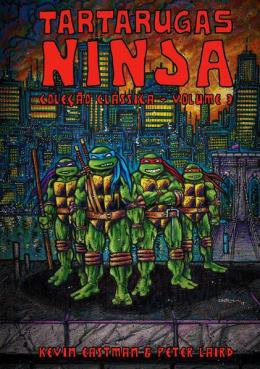

QUAL TARTARUGA NINJA VOCÊ SERIA?
Responda algumas perguntas para descobrir qual Tartaruga Ninja mais combina com você!
O Líder
Leonardo é o líder disciplinado da equipe. Ele usa espadas katana e veste bandana azul. Sempre colocando a equipe em primeiro lugar, Leonardo é estratégico, leal e dedicado ao seu treinamento.
"Um líder não é nada sem sua equipe."
O Temperamental
Raphael é o membro mais intenso e temperamental da equipe. Ele usa sais e veste bandana vermelha. Forte, impulsivo e protetor, Raphael sempre está pronto para lutar pelo que acredita.
"Eu prefiro bater primeiro e fazer perguntas depois."
O Brincalhão
Michelangelo é a alma da festa. Ele usa nunchakus e veste bandana laranja. Divertido, criativo e sempre otimista, Mikey é conhecido por seu amor por pizza e por manter o espírito da equipe elevado.
"Pizza é vida, cara!"
O Gênio
Donatello é o cérebro da equipe. Ele usa um bastão bō e veste bandana roxa. Inteligente, inventor e pacífico, Donnie sempre encontra soluções tecnológicas para os problemas da equipe.
"A tecnologia é a solução para quase tudo."
O Mentor
Splinter é o mentor e pai adotivo das tartarugas. Um rato mutante com conhecimentos de ninjutsu, ele treinou as tartarugas nas artes marciais e na filosofia ninja.
"A mente é a arma mais poderosa."
A Aliada
April é uma repórter e a primeira amiga humana das tartarugas. Corajosa e determinada, ela frequentemente ajuda as tartarugas em suas missões contra o mal.
"Esta é April O'Neil, reportando ao vivo."
O Vilão
Shredder é o principal antagonista e líder do Clã do Pé. Implacável e poderoso, ele busca vingança contra Splinter e está determinado a destruir as tartarugas.
"Eu destruirei Splinter e suas tartarugas!"
As Tartarugas Ninja foram criadas em 1984 por Kevin Eastman e Peter Laird como uma paródia de quadrinhos populares da época. O que começou como uma piada se transformou em um fenômeno cultural!
Ao longo dos anos, as Tartarugas Ninja tiveram várias encarnações em desenhos animados e filmes:
O amor das tartarugas por pizza se tornou uma característica icônica da franquia. Inicialmente, nos quadrinhos originais, elas não eram obcecadas por pizza, mas isso foi adicionado na série animada de 1987 e se tornou parte essencial da identidade delas!
Os nomes das tartarugas são uma homenagem a artistas renascentistas famosos:
Responda algumas perguntas para descobrir qual Tartaruga Ninja mais combina com você!
"A paciência é a maior das virtudes."
"Não é o tamanho da tartaruga na luta, mas o tamanho da luta na tartaruga."
"O verdadeiro ninja sabe quando lutar e quando se esconder."
"A família não é definida pelo sangue, mas pelo amor e lealdade."
"Mesmo o mais longo dos jornadas começa com um único passo."
"O medo é apenas um obstáculo que a mente cria."
Como Leonardo, pratique disciplina diariamente. Estabeleça uma rotina e siga-a com determinação.
Como Raphael, fortaleça seu corpo e mente. Enfrente seus medos e desafios com coragem.
Como Michelangelo, cultive sua criatividade. Encontre soluções inovadoras e mantenha o bom humor.
Como Donatello, busque sempre o conhecimento. A mente é a arma mais poderosa de um ninja.